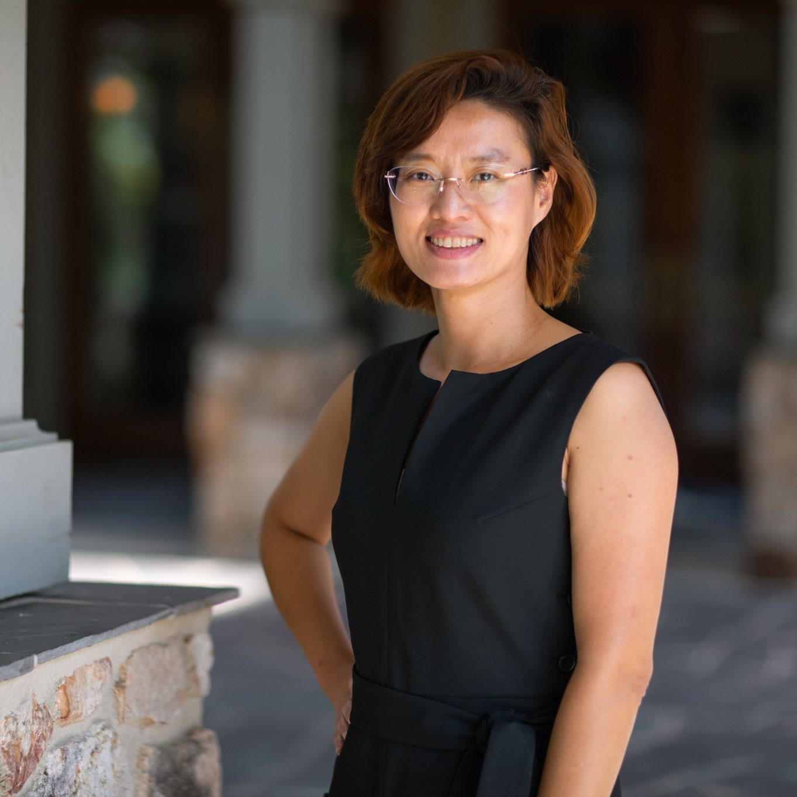

Workshop Program -- Thursday, June 22nd, 2023 @ Kyoto Terrsa [ACNS Venue]
NEWS: “Hybrid Post-Quantum Signatures in Hardware Security Keys” from ACNS-SCI workshop is selected as one of the two Best Workshop Papers of ACNS 2023!- Opening Remarks (9:00-9:10, UTC+9, Chair: Jingqiang Lin)
- Keynote (9:10-10:10, UTC+9, Chair: Bo Luo)
- Session 1 (10:30-11:30, UTC+9, Chair: Bo Luo): On-site
- Session 2 (14:00-15:00, UTC+9, Chair: Jun Shao): Online
- Session 3 (15:20-16:00, UTC+9, Chair: Fangyu Zheng): Online
Measurable and Deployable Security: Gaps, Successes, and Opportunities
- Danfeng (Daphne) Yao (Virginia Tech, USA)
1. Hybrid Post-Quantum Signatures in Hardware Security Keys (10:30-10:50)
- Diana Ghinea, Fabian Kaczmarczyck, Jennifer Pullman, Julien Cretin, Stefan Kölbl, Rafael Misoczki, Jean-Michel Picod, Luca Invernizzi and Elie Bursztein
2. ZKBdf: A ZKBoo-based Quantum-Secure Verifiable Delay Function with Prover-secret (10:50-11:10)
- Teik Guan Tan, Vishal Sharma, Zengpeng Li, Pawel Szalachowski and Jianying Zhou
3. Generic Constructions of Server-Aided Revocable ABE with Verifiable Transformation (11:10-11:30)
- Feng Yang, Hui Cui and Jiwu Jing
1. cPSIR: Circuit-based Private Stateful Information Retrieval for Private Media Consumption (13:30-13:50)
- Wenyuan Li, Wei Wang, Fan Lang, Linli Lu and Heqing Huang
2. A Deep-Learning Approach for Predicting Round Obfuscation in White-Box Block Ciphers (13:50-14:10)
- Tongxia Deng, Ping Li, Shunzhi Yang, Yupeng Zhang, Zheng Gong, Ming Duan and Yiyuan Luo
3. SpanL: A Language for Screening Improper Use of Security APIs in High-level Languages (14:10-14:30)
- Sazzadur Rahaman, Miles Frantz, Barton Miller and Danfeng Yao
1. Multi-Armed SPHINCS+ (14:50-15:10)
- Florian Caullery and Gustavo Banegas
2. Efficient Arithmetic for Polynomial Multiplication in Post-Quantum Lattice-based Cryptosystem on RISC-V Platform (15:10-15:30)
- Haosong Zhao, Rui Su, Rui Lin, Jiankuo Dong and Donglong Chen
Keynote: Measurable and Deployable Security: Gaps, Successes, and Opportunities By: Dr. Danfeng (Daphne) Yao, Virginia Tech, USA |
 |
Abstract: Security measurement helps identify deployment gaps and present extremely valuable research opportunities. However, such research is often deemed as not novelty by academia. I will first share my research journey designing and producing a high-precision tool CryptoGuard for scanning cryptographic vulnerabilities in large Java projects. That work led us to publish two benchmarks used for systematically assessing state-of-the-art academic and commercial solutions, as well as help Oracle Labs integrate our detection in their routine code screening. Other specific measurement and deployment cases to discuss include the Payment Card Industry Data Security Standard, which was involved in high-profile data breach incidents, and machine learning prediction for digital health. The talk will also point out the need for measurement in AI-based cryptographic code generation. Broadening research styles by accepting and encouraging deployment-related work will facilitate our field to progress towards maturity. |
|
Speaker BIO: Dr. Danfeng (Daphne) Yao is a Professor of Computer Science at Virginia Tech. She is an Elizabeth and James E. Turner Jr. '56 Faculty Fellow and CACI Faculty Fellow. Her research interests include building cyber defenses, as well as machine learning for digital health, with a shared focus on accuracy and deployment. Her tool CryptoGuard helps large software companies and Apache projects harden their cryptographic code. Her patents on anomaly detection are extremely influential in the industry, cited by patents from major cybersecurity firms and technology companies, including FireEye, Symantec, Qualcomm, Cisco, IBM, SAP, Boeing, and Palo Alto Networks. Dr. Yao is an IEEE Fellow for her contributions to enterprise data security and high-precision vulnerability screening. In 2021, she received the prestigious ACM CODASPY Lasting Research Award. She is also an ACM Distinguished Scientist. Previously, she received the NSF CAREER Award and ARO Young Investigator Award. Dr. Yao is the ACM SIGSAC Vice Chair and has been a member of the ACM SIGSAC executive committee since 2017. Daphne received her Ph.D. degree from Brown University (Computer Science), M.S. degrees from Princeton University (Chemistry) and Indiana University (Computer Science), Bloomington, B.S. degree from Peking University in China (Chemistry). |
|
Accepted Papers
- #1 - Hybrid Post-Quantum Signatures in Hardware Security Keys
- #2 - ZKBdf: A ZKBoo-based Quantum-Secure Verifiable Delay Function with Prover-secret
- #3 - Generic Constructions of Server-Aided Revocable ABE with Verifiable Transformation
- #4 - cPSIR: Circuit-based Private Stateful Information Retrieval for Private Media Consumption
- #5 - A Deep-Learning Approach for Predicting Round Obfuscation in White-Box Block Ciphers
- #6 - SpanL: A Language for Screening Improper Use of Security APIs in High-level Languages
- #7 - Multi-Armed SPHINCS+
- #8 - Efficient Arithmetic for Polynomial Multiplication in Post-Quantum Lattice-based Cryptosystem on RISC-V Platform
Note: Each accepted workshop paper needs one registration at full rate before (8th May), no matter student author or not. Please refer to ACNS 2023 registration link to finish this process.
ACNS Workshop on SCI: Call for Papers
In recent years, we have witnessed severe security incidences caused by buggy protocols or implementations of cryptographic algorithms: POODLE, DROWN, OpenSSL Heartbleed, Windows certificate validation vulnerabilities, PDF shadow attacks, Google Titan Token Bluetooth bugs, etc. It is critical for practitioners and researchers to ensure the security of cryptographic software and hardware, which are essential for a wide range of systems, services, and applications.
The aim of the SCI workshop is to provide an international forum of scientific research and development to explore the security issues in the implementation and deployment of cryptographic solutions. We are interested in these main aspects: (1) vulnerabilities and defenses in the implementation of cryptographic algorithms; (2) vulnerabilities and defenses in the implementation of cryptographic protocols; (3) defective cryptographic algorithms and protocols deployed in the wild; (3) weak cryptographic keys and random numbers in the cryptographic implementation; (4) runtime cryptographic key attacks and protections; (5) certificates and key management; (6) misuse or abuse of cryptographic services; and (7) other topics on secure cryptographic implementations.
We try to promote secure cryptographic solutions in the Internet, by exploring and discussing the (in)security issues. We solicit submissions of original research papers on a wide range of topics, including but not limited to:
- Secure implementations of crypto algorithms & protocols
- Fuzzing and vulnerabilities of crypto algorithms & protocols
- Measurement of cryptographic solutions in the wild, defective or updated
- Designs of random bit generators
- Weak cryptographic keys and defective random bit generators
- Side channel attacks and defenses
- Cryptographic key protections and memory attacks
- PKI certificate services and key management
- HTTPS/TLS vulnerabilities and attacks
- Measurement and bugs of certificate-based solutions
- Audit and monitoring of cryptographic services
- Physical attacks and defenses of cryptographic implementation
- Verification and evaluation of cryptographic implementation
- High-performance cryptographic engines
- Cryptographic hardware
- Cryptography for Blockchain
- Cryptography for IoT/CPS
- Cryptography for the Cloud
- Cryptography for Mobile systems
- Cryptography for VANET
We are especially interested in papers with novel ideas, position papers, pilot studies, and initial findings. ACNS will also award a best papers from the 2023 ACNS workshops (ADSC, AIBlock, AIHWS, AIoTS, CIMSS, Cloud S&P, SCI, SecMT, SiMLA and S&P-FL), with 500 EUR prize sponsored by Springer. Meanwhile, the workshop will include an interesting keynote talk, which will be announced on the workshop web site as arrangements are finalized.
Prospective authors are invited to submit manuscripts describing original work. The manuscript has to be written in English and in PDF format. All submissions must follow the original LNCS format (see http://www.springeronline.com/lncs) with a page limit of 20 pages including all references and appendices.
The proceedings of the SCI workshop will be published by Springer in the LNCS series.
Submit your papers: https://easychair.org/conferences/?conf=acnssci2023
Program Committee
- Sebastian Berndt University of Lübeck, Germany
- Florian Caullery HENSOLDT Cyber GmbH, Germany
- Bo Chen Michigan Technological University, USA
- Jiankuo Dong Nanjing University of Posts and Telecommunications, China
- Haixin Duan Tsinghua University, China
- Niall Emmart NVIDIA Corporation, USA
- Johann Großschädl University of Luxembourg, Luxembourg
- Shanqing Guo Shandong University, China
- Rongxing Lu University of New Brunswick, Canada
- Bingyu Li Beihang University, China
- Fengjun Li University of Kansas, USA
- Ximeng Liu Fuzhou University, China
- Chunli Lv China Agricultural University, China
- Di Ma ZDNS, China
- Yuan Ma Chinese Academy of Sciences, China
- Kui Ren Zhejiang University, China
- Ruisheng Shi Beijing University of Posts and Telecommunications, China
- Ding Wang Nankai University, China
- Juan Wang Wuhan University, China
- Danfeng (Daphne) Yao Virginia Polytechnic Institute and State University, USA
- Fangyu Zheng Chinese Academy of Sciences, China
- Cong Zuo Nanyang Technological University, Singapore
In Conjunction with
ACNS 2023
Important Dates:
Paper submission:
March 14, 2023. 23:59, AoE
Acceptance Notification:
April 19, 2023
May 1, 2023
Workshop Chairs:
Dr. Jingqiang Lin
University of Science and Technology of China
linjq <at> ustc.edu.cn
Dr. Jun Shao
Zhejiang Gongshang University
chn.junshao <at> gmail.com
Publication Chair
Dr. Bo Luo
University of Kansas
bluo <at> ku.edu
Publicity Co-chairs:
Hao Peng
Zhejiang Normal University
Fangyu Zheng
Chinese Academy of Sciences
Past SCI Workshops

 In conjunction with ACNS 2020_files/gototop.png "go to top")